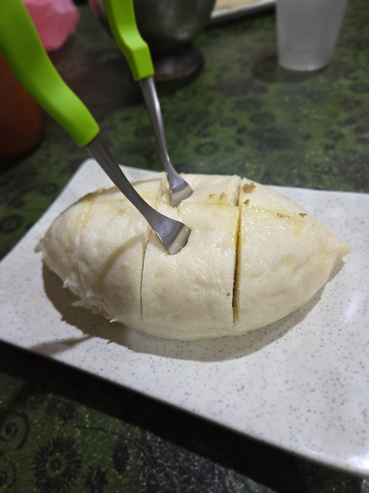

Siddu
steamed wheat buns risen slow and stuffed with crushed walnut and poppy seed, eaten swimming in ghee

Contains: milk, gluten, tree nuts, mustard
Ingredients
Quantities for 4.
- 400g Atta
- 4 tbsp, at room temperature Yogurtsours the dough and helps it rise; yeast is traditional in Kullu, this is the everyday shortcut
- 1/2 tsp Baking Soda
- 5 tbsp, melted Gheefor serving, and this is not the place to be shy
- 120g, coarsely crushed Walnutsthe Kullu filling; the nuts should be gritty, not powdered
- 3 tbsp, dry roasted Poppy Seeds
- 1 tbsp Mustard Oil
- 2, finely chopped Green Chilli
- 2cm, grated Ginger
- 3 tbsp, chopped Coriander Leavesoptional
- 1/2 tsp Ajwain
- 1 tsp Cumin Powder
- 1/2 tsp Chilli Powder
- 1/2 tsp, coarsely ground Black Pepper
- to taste Salt
- 230ml, lukewarm Water
Cookware
steamer, stovetop
Checked against the ingredient list for ten allergens: milk, egg, fish, crustaceans, tree nuts, peanuts, sesame, mustard, soy and gluten. Brands vary, so read the label on anything new to you.
Before you start
- The dough needs 3 hours in a warm place. In a cold kitchen sit the covered bowl over a pan of hand-hot water.
- Dry roast the poppy seeds in a pan until they smell nutty and start popping, about 2 minutes, then cool before crushing.
- Crush the walnuts in a mortar or under a rolling pin. A blender turns them to oily paste.
Method
- Mix the atta, baking soda and 1 tsp salt. Work in the yogurt, then the lukewarm water a little at a time, to a soft dough slightly stickier than roti dough. Knead 8 minutes.Softer than you think is right. A stiff dough steams into a dense brick.
- Oil the surface, cover with a damp cloth and leave in a warm spot for 3 hours. It should look puffed and feel airy, not doubled like bread.
- Meanwhile mix the crushed walnuts, roasted poppy seeds, mustard oil, green chilli, ginger, coriander leaves, ajwain, cumin powder, chilli powder, black pepper and salt into a damp, crumbly filling.
- Knock the dough back gently and divide into 8 balls. Do not knead it hard again.
- Roll each ball into a 12cm disc. Put 2 heaped tbsp of filling on one half, fold over into a half moon and press the curved edge firmly, then pleat it shut with your fingers.Seal properly or the filling weeps out and the siddu collapses in the steamer.
- Rest the shaped siddus, covered, for 15 minutes while the steamer comes up to a rolling boil.
- Grease the steamer plate, arrange the siddus with 2cm between them and steam on high for 18 to 20 minutes.Do not lift the lid before 15 minutes - the drop in steam makes them sink.
- Test with a skewer through the thickest part: it should come out clean and dry. Give them 3 more minutes if not.
- Take them out, split the tops slightly and pour a tablespoon of melted ghee over each. Serve hot with mash dal or a chutney.
Storage
Best within a few hours. Keeps 2 days refrigerated; re-steam 6 to 8 minutes to bring back the softness, or slice and pan-fry in ghee. Do not microwave - they go rubbery.
Nutrition Good estimate
Medium protein: 17 g a serving, 9% of the calories
| Per serving245 g | Per 100 g | |
|---|---|---|
| Calories | 755 kcal | 309 kcal |
| Protein | 16.6 g | 7 g |
| Carbohydrate | 83.3 g | 34 g |
| of which sugars | 3.0 g | 1 g |
| Fibre | 17.3 g | 7 g |
| Fat | 44.6 g | 18 g |
| of which saturated | 13.2 g | 5 g |
| of which unsaturated | 29.0 g | 12 g |
Ingredients given to taste count as zero, so the real figures run a little higher. Estimated from raw ingredients using USDA FoodData Central.
More like this: Vegetarian Indian recipes · Pahari recipes
Times, yields, allergens and nutrition are guidance. Use your own judgement on doneness and on storing. More in About.